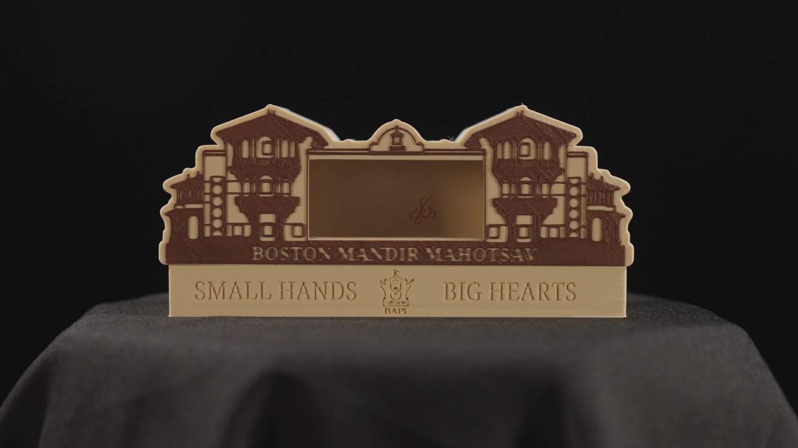
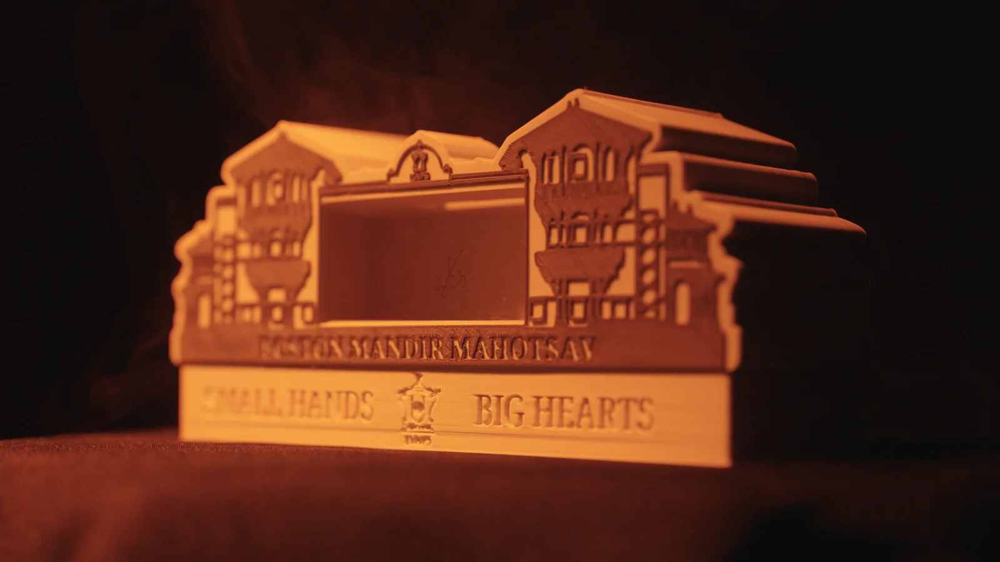
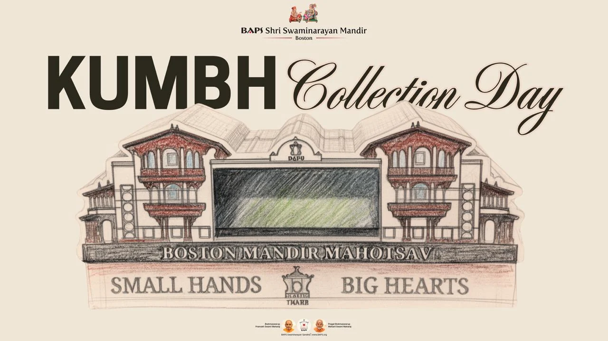
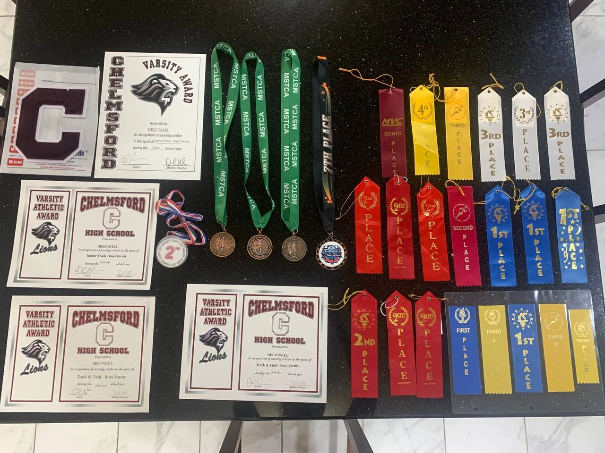
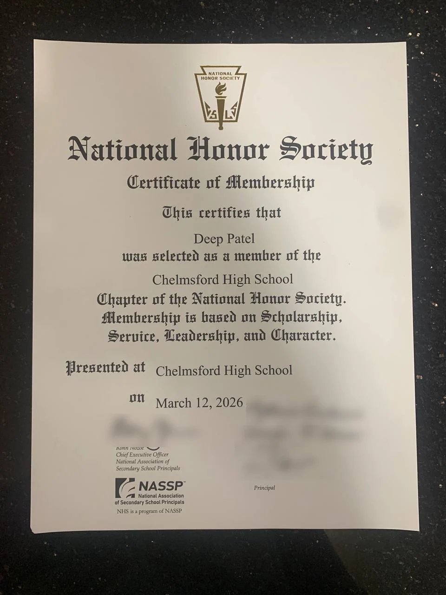
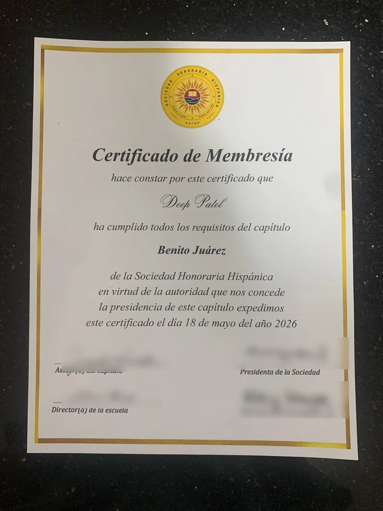

Experience
Most of my time outside class goes to BAPS, a Hindu organization, and our temple in Lowell. I lead its children's program, build things for its events, and help run its charity work.
- kids in Bal Mandal every week
- 70+
- peer teachers I lead
- 15
- raised by the kids through the Bachat Kumbh Project
- $2,500
- raised through the BAPS Charities Walk-Run over four years
- $165,000+
Youth leadership
Youth Activities Coordinator, BAPS Bal Mandal
Lowell, MA · Teacher from August 2022, coordinator since 2024
I lead Bal Mandal, the weekly children's program at the BAPS Swaminarayan Temple in Lowell.
- I lead 15 peer teachers, the parent coordinators, and the other teams behind the program
- 70+ kids every week in four age groups, from kindergarten through grade 8, with two or three teachers per group
- Planning and debrief meetings before and after each assembly, where I assign lessons and we decide what to change
- Training new teachers, and teaching the lesson myself when a teacher is out
- Directing our annual Youth Day. At our local BAPS center, the children take the stage themselves with skits, songs, and short talks.


The Bachat Kumbh Project, launched February 21, 2026
A savings box for every child, shaped like the new BAPS temple being built in Tyngsborough, MA. "Bachat" means savings, and a "kumbh" is a traditional vessel.
- Co-founded the project and came up with the idea of giving every Bal Mandal child their own kumbh
- Helped design and 3D-print the kumbh, a model of the new temple's front
- Run the logistics, from handing the kumbhs out to collecting them, counting the money, and submitting it
- About $2,500 raised by the kids so far
The new temple belongs to these kids too, and I wanted them to feel proud that they helped build it.



Bal Balika Summer Shibir
A three-day summer camp for children in grades 4 through 8, with more than 1,000 participants, that teaches values through activities, stage programs, and breakout sessions.
- Stage programs for the whole camp in 2023, 2024, and 2025
- Ran a smaller shibir in 2026


Kids Diwali Celebration, event lead 2023 to 2026
Every year 400 to 500 children come to our temple for a stage program, food, prizes, and an arcade of Diwali games.
- Event lead four years running, 2023 through 2026
- I run the whole day, from the stage program and the order of events to registration, food, and the arcade
- I coordinate the teams behind it, including food, games, prizes, program, and audiovisual, so each knows what the others need and when
- I cut the 2026 stage props and decorations on a CNC hot-wire cutter for the October 25 celebration


Kishore Mandal
I'm also a member of Kishore Mandal, the temple's high school wing, which meets every week for prayer, devotional songs, and a talk on our history or values.
- Weekly forums and retreats. I help lead them, and we talk through everyday things like school, family, and peer pressure.
- Satsang Exams. These are written exams on our culture, values, and religion, with study books for each level from Prarambh to Pragna. I take them, encourage others to sign up, and help organize them at our temple.
- Festivals of 1,000+ people. I help coordinate the stage setup and crowd control.
National youth convention, 2027 (upcoming)
I am preparing to help run a national BAPS youth convention in 2027. More than 10,000 young people are expected.
Fabrication
CNC and hot-wire work, 2023 to 2026.
Full-Time Volunteer, BAPS Akshardham
Edison, NJ · July 2023 to October 2023
I made ornamental parts for BAPS Akshardham, the monument then being built in Robbinsville, at a digital fabrication shop at the BAPS temple in Edison, New Jersey.
- Full time all summer, seven days a week and usually eight hours a day or more. Once 9th grade started, I traveled down every weekend.
- Drew parts in CorelDRAW and Illustrator and turned the drawings into CNC files
- Ran industrial CNC routers and hot-wire cutters, mostly on detailed foam designs, plus wood and PVC
- Hit an 8 AM truck deadline every day. Once I caught a design error that would have caused a faulty cut, and another volunteer and I worked through the night to fix the file and recut the piece before the trucks left.
The senior designers taught me how to draw a part so a machine can cut it, and how a project that large comes together on time. I still use what they taught me, most recently in October 2026, when I cut the Kids Diwali stage props on a CNC hot-wire cutter.


Community service
Walkathon Organizer and Outreach Volunteer, BAPS Charities
Lowell, MA · June 2017 to present
I help organize the annual BAPS Charities Walk-Run in Lowell, which supports a different cause each year.
- Routes and registration. I set them up every year, and the 2025 walk had more than 650 participants.
- More than $165,000 raised over four years, including the pledges I collect each year
- Recent causes include the Lowell Police and Tyngsborough Fire departments, Tyngsborough Public Schools, breast cancer awareness, and the Walk Green initiative for The Nature Conservancy's Plant a Billion Trees campaign
- Year round, I also help run cleanups, food drives, and health awareness events, with setup, check-in, and crowd direction


Work
Email Marketing Associate, ALPHAPEP LLC
Lowell, MA · May 2026 to present
I design targeted marketing emails for the company's products and send them out. I also manage the outgoing campaigns, so each one reaches customers on schedule.
School
Chelmsford High School.
Vice President, Artificial Intelligence Club
September 2025 to present
- 15 members. I manage the club and host meetings every two weeks on using AI safely and ethically.
- MIT URTC project lead. My team prepared a project for the IEEE MIT Undergraduate Research Technology Conference: an AI tool that monitors conditions at home to care for household plants.
When I joined, everyone seemed better at coding than me, so I stayed quiet. As vice president I noticed a freshman doing the same thing. I sat down with him one on one with beginner guides, starting with AI ethics and news before any code, until he was joining in at meetings instead of watching.
Captain, Track and Field
November 2023 to present
- Three State Relays medals. Our high jump relay team placed 4th, 4th, and 6th at the MSTCA Division II State Relays.
- Six varsity seasons, indoor and outdoor, in the high jump, 55m hurdles, and 110m hurdles
- Captain. I lead daily workouts for 75+ athletes and mentor more than 35 underclassmen on form and discipline.



Honor societies
I was inducted into the National Honor Society's Chelmsford High School chapter on March 12, 2026, and into the Benito Juárez chapter of the Sociedad Honoraria Hispánica, the Spanish National Honor Society, on May 18, 2026.


Robotics Club · September 2023 to June 2024
I was on a team that designed, built, and tested robots for VEX Robotics competitions. I programmed our robot to navigate competition mazes on its own and built the mechanisms that lifted plastic balls into the scoring baskets.